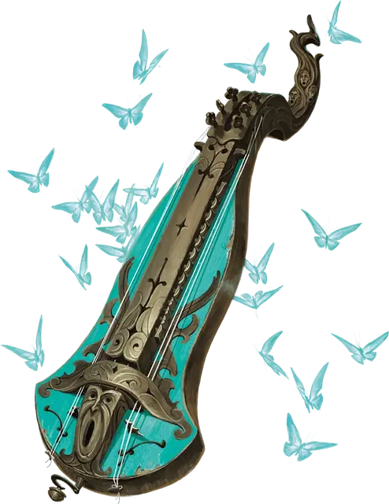

Инструмент иллюзий
Instrument of Illusions
Чудесный предмет, обычный (требуется настройка)

Рекомендованная стоимость 50-100 зм
Когда вы играете на этом музыкальном инструменте, вы можете создавать безвредные иллюзорные визуальные эффекты в пределах сферы радиусом 5 футов с центром на инструменте. Если вы бард, радиус возрастает до 15 футов. Примеры визуальных эффектов: светящиеся ноты в воздухе, призрачная танцовщица, бабочки или медленно падающие хлопья снега. Магические эффекты неосязаемы и не издают звуков, кроме того, их иллюзорность очевидна. Эффекты заканчиваются, когда вы перестаёте играть.